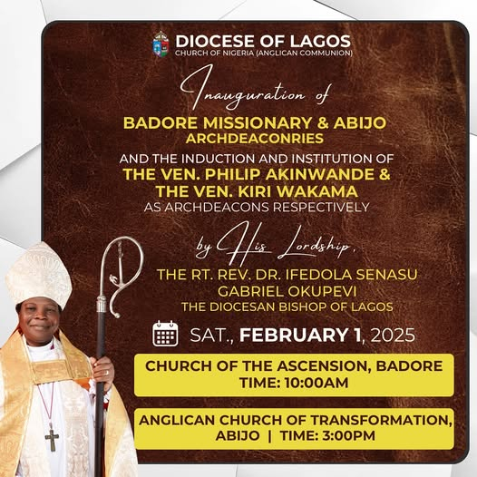

Recent News

Church Inauguration
June 12 • Our new parish in the north region is now open for worship...

Diocesan Synod
Leaders convened to chart the diocese's path forward in ministry...

Youth Fellowship
Engaging our youth through inspirational programs and events...